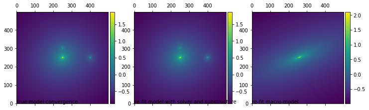
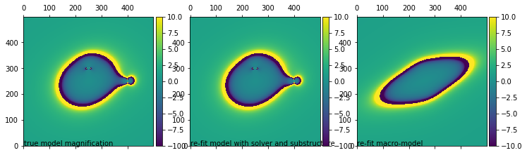

lenstronomy lens equation solver and flux ratios computation example notebook#
# import standard python modules
import copy
import numpy as np
import matplotlib.pyplot as plt
from mpl_toolkits.axes_grid1 import AxesGrid, make_axes_locatable
%matplotlib inline
# make sure lenstronomy is installed, otherwise install the latest pip version
try:
import lenstronomy
except:
!pip install lenstronomy
# import the lens model class
from lenstronomy.LensModel.lens_model import LensModel
from lenstronomy.LensModel.lens_model_extensions import LensModelExtensions
# import the lens equation solver class (finding image plane positions of a source position)
from lenstronomy.LensModel.Solver.lens_equation_solver import LensEquationSolver
# import lens model solver with 4 image positions constrains
from lenstronomy.LensModel.Solver.solver4point import Solver4Point
# chose a lens model (list of parameterized lens models)
lens_model_list = ['EPL', 'SHEAR_GAMMA_PSI', 'NFW', 'NFW']
#initialize classes with the specific lens models
lensModel = LensModel(lens_model_list)
lensEquationSolver = LensEquationSolver(lensModel)
solver4Point = Solver4Point(lensModel=lensModel, solver_type='PROFILE_SHEAR')
# chose a lens model parameterization
kwargs_spep = {'theta_E': 1., 'gamma': 2, 'e1': 0.05, 'e2': 0.05, 'center_x': 0.01, 'center_y': 0}
kwargs_shear = {'gamma_ext': 0.06, 'psi_ext': -1}
kwargs_nfw_1 = {'alpha_Rs': 0.1, 'Rs': 0.1, 'center_x': 1.5, 'center_y': 0}
kwargs_nfw_2 = {'alpha_Rs': 0.1, 'Rs': 0.1, 'center_x': 0, 'center_y': 0.5}
kwargs_lens_list = [kwargs_spep, kwargs_shear, kwargs_nfw_1, kwargs_nfw_2]
# choose a source position
x_source, y_source = 0.01, 0
# compute image position of full model (with numerical options attached)
x_image, y_image = lensEquationSolver.image_position_from_source(kwargs_lens=kwargs_lens_list, sourcePos_x=x_source, sourcePos_y=y_source, min_distance=0.01, search_window=5, precision_limit=10**(-10), num_iter_max=100)
print('image positions: ', x_image)
# check solver precision by ray-tracing the image positions back into the source plane
x_source_new, y_source_new = lensModel.ray_shooting(x_image, y_image, kwargs_lens_list)
print("the relative precision of the image positions are: ", x_source_new - x_source)
image positions: [ 0.34707535 -0.72902227 -0.8885516 0.87257629]
the relative precision of the image positions are: [-3.83830988e-12 -2.13370988e-16 -2.13370988e-16 1.19695920e-16]
# fit the same lens model parameterization to the 4 image positions (free SPEMD model)
# the initial guess of the model can be rather different but 'gamma' has to be kept fixed
kwargs_lens_init = copy.deepcopy(kwargs_lens_list)
kwargs_lens_init[0] = {'theta_E': 0.9, 'gamma': 2., 'e1': 0, 'e2': 0, 'center_x': 0., 'center_y': 0}
kwargs_fit, precision = solver4Point.constraint_lensmodel(x_pos=x_image, y_pos=y_image, kwargs_list=kwargs_lens_init, xtol=1.49012e-10)
print('the relative error of the Einstein radius is: ', kwargs_fit[0]['theta_E'] - kwargs_lens_list[0]['theta_E'])
the relative error of the Einstein radius is: 3.9823699893304365e-12
# now we fit the point sources with a simpler model (only SPEMD and SHEAR without the NFWs)
lens_model_list_simple = ['PEMD', 'SHEAR_GAMMA_PSI']
lensModelSimple = LensModel(lens_model_list_simple)
solver4Point_simple = Solver4Point(lensModel=lensModelSimple, solver_type='PROFILE_SHEAR')
kwargs_lens_init = [{'theta_E': 0.9, 'gamma': 2., 'e1': 0, 'e2': 0, 'center_x': 0., 'center_y': 0}, {'gamma_ext': 0.1, 'psi_ext': 0}]
kwargs_fit_simple, precision = solver4Point_simple.constraint_lensmodel(x_pos=x_image, y_pos=y_image, kwargs_list=kwargs_lens_init, xtol=1.49012e-10)
print("the re-fitted macro-model parameters are: ", kwargs_fit_simple)
# check whether this simpler solution obeys the lens equation
lensModel_simple = LensModel(lens_model_list_simple)
beta_x_new, beta_y_new = lensModel_simple.ray_shooting(x_image, y_image, kwargs_fit_simple)
print("The relative position in the source plane (should match) is: ", beta_x_new - np.mean(beta_x_new))
# we can now set a new estimate of the source position
beta_x_new = np.mean(beta_x_new)
beta_y_new = np.mean(beta_y_new)
# and solve for the new image positions (which should come very close to the true ones)
lensEquationSolver_new = LensEquationSolver(lensModel=lensModel_simple)
x_image_new, y_image_new = lensEquationSolver_new.image_position_from_source(kwargs_lens=kwargs_fit_simple, sourcePos_x=beta_x_new, sourcePos_y=beta_y_new, min_distance=0.01, search_window=5, precision_limit=10**(-10), num_iter_max=100)
the re-fitted macro-model parameters are: [{'theta_E': 1.1608050039749216, 'gamma': 2.0, 'e1': 0.3623676483959331, 'e2': 0.3346126142456583, 'center_x': 0.08194263357439588, 'center_y': 0.018248383550927803}, {'gamma_ext': 0.1, 'psi_ext': 0.15507571278270602}]
The relative position in the source plane (should match) is: [-3.83808263e-12 -3.19809457e-12 1.04562053e-11 -3.42002815e-12]
# now let's compute the magnification at the point source position (infinitesly small source)
mag = lensModel.magnification(x_image, y_image, kwargs_lens_list)
mag_macro = lensModel_simple.magnification(x_image, y_image, kwargs_fit_simple)
print(mag, mag_macro)
scaling = 1
# and the magnification of a finite source size
source_sigma = 0.001*scaling # source size in arcsec
import lenstronomy.Util.constants as const
arcsec2pc = const.arcsec * 1000 * 10**6
print(source_sigma*arcsec2pc)
window_size = 0.5*scaling # size of window to compute fluxes on every image
grid_number = 500 # number of grid points per axis in the window
lensModelExtensions = LensModelExtensions(lensModel=lensModel)
fluxes = lensModelExtensions.magnification_finite(x_image, y_image, kwargs_lens=kwargs_lens_list, grid_number=grid_number, source_sigma=source_sigma, window_size=window_size)
print(fluxes)
lensModelExtensions_simple = LensModelExtensions(lensModel=lensModel_simple)
fluxes_simple = lensModelExtensions_simple.magnification_finite(x_image, y_image, kwargs_lens=kwargs_fit_simple, grid_number=grid_number, source_sigma=source_sigma, window_size=window_size)
print(fluxes_simple)
[ 4.93703179 5.57879544 -5.19150983 -3.69371962] [ 2.99127834 2.68352847 -1.45104183 -0.89395672]
4.84813681109536
[4.93722724 5.5790863 5.1919156 3.69378654]
[2.99131697 2.68350279 1.45113587 0.89399404]
some plots#
# make a pixel grid suited for plotting
from lenstronomy.Util import util
x_grid, y_grid = util.make_grid(numPix=500, deltapix=0.01)
# plot convergence
kappa_grid = lensModel.kappa(x_grid, y_grid, kwargs_lens_list)
kappa2d = util.array2image(kappa_grid)
kappa_grid = lensModel.kappa(x_grid, y_grid, kwargs_fit)
kappa2d_fit = util.array2image(kappa_grid)
kappa_grid = lensModel_simple.kappa(x_grid, y_grid, kwargs_fit_simple)
kappa2d_simple = util.array2image(kappa_grid)
f, axes = plt.subplots(1, 3, figsize=(12, 4), sharex=False, sharey=False)
ax = axes[0]
im = ax.matshow(np.log10(kappa2d), origin='lower')
ax.text(1, 1, 'true model convergence')
ax.autoscale(False)
divider = make_axes_locatable(ax)
cax = divider.append_axes("right", size="5%", pad=0.05)
plt.colorbar(im, cax=cax)
ax = axes[1]
im = ax.matshow(np.log10(kappa2d_fit), origin='lower')
ax.text(1, 1, 're-fit model with solver and substructure')
ax.autoscale(False)
divider = make_axes_locatable(ax)
cax = divider.append_axes("right", size="5%", pad=0.05)
plt.colorbar(im, cax=cax)
ax = axes[2]
im = ax.matshow(np.log10(kappa2d_simple), origin='lower')
ax.text(1, 1, 're-fit macro-model')
ax.autoscale(False)
divider = make_axes_locatable(ax)
cax = divider.append_axes("right", size="5%", pad=0.05)
plt.colorbar(im, cax=cax)
plt.show()
# plot magnification
mag_grid = lensModel.magnification(x_grid, y_grid, kwargs_lens_list)
mag2d = util.array2image(mag_grid)
mag_grid = lensModel.magnification(x_grid, y_grid, kwargs_fit)
mag2d_fit = util.array2image(mag_grid)
mag_grid = lensModel_simple.magnification(x_grid, y_grid, kwargs_fit_simple)
mag2d_simple = util.array2image(mag_grid)
import matplotlib.pyplot as plt
%matplotlib inline
from mpl_toolkits.axes_grid1 import AxesGrid, make_axes_locatable
f, axes = plt.subplots(1, 3, figsize=(12, 4), sharex=False, sharey=False)
ax = axes[0]
im = ax.matshow(mag2d, origin='lower', vmin=-10, vmax=10)
ax.text(1, 1, 'true model magnification')
ax.autoscale(False)
divider = make_axes_locatable(ax)
cax = divider.append_axes("right", size="5%", pad=0.05)
plt.colorbar(im, cax=cax)
ax = axes[1]
im = ax.matshow(mag2d_fit, origin='lower', vmin=-10, vmax=10)
ax.text(1, 1, 're-fit model with solver and substructure')
ax.autoscale(False)
divider = make_axes_locatable(ax)
cax = divider.append_axes("right", size="5%", pad=0.05)
plt.colorbar(im, cax=cax)
ax = axes[2]
im = ax.matshow(mag2d_simple, origin='lower', vmin=-10, vmax=10)
ax.text(1, 1, 're-fit macro-model')
ax.autoscale(False)
divider = make_axes_locatable(ax)
cax = divider.append_axes("right", size="5%", pad=0.05)
plt.colorbar(im, cax=cax)
plt.show()

